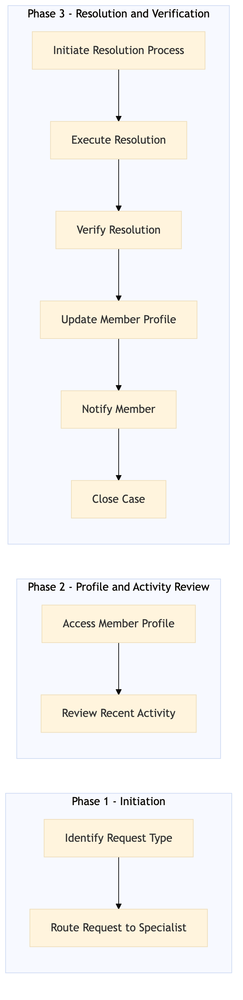

This process document outlines the VIP and One Key Loyalty Member Service for Expedia Group (OTA) and Amex GBT / SAP Concur (TMC). It ensures seamless service delivery to high-value customers, leveraging various systems for efficient operations.
| Trigger | A VIP or One Key loyalty member initiates a service request through any of the supported channels (e.g., phone, email, chatbot). |
| Outcome | The VIP or One Key loyalty member receives timely and personalized service, with their requests resolved efficiently and effectively. |
| Systems | Salesforce One Key Expedia Open World Partner Central Amadeus NDC Sabre GDS Travelport |

Click to enlarge
| Step | Name & Pain Point | Role | System | Input | Output | KPI | Flags |
|---|---|---|---|---|---|---|---|
| 1.1 | Identify Request Type Handling complex requests that require multiple system integrations | Customer Service Agent | Salesforce | Service request from VIP or One Key member | Request type classification (e.g., booking issue, account inquiry) | 100% accurate request classification within 2 minutes | ⚠ Exception |
| 1.2 | Route Request to Specialist Ensuring the right specialist is available and responsive | Customer Service Agent | Salesforce | Request type classification | Routing request to appropriate specialist (e.g., booking, account) | 95% of requests routed correctly within 1 minute | ⚠ Exception |
| 2.1 | Access Member Profile Handling outdated or incomplete member data | Specialist | One Key, Salesforce | Member ID or contact information | Complete member profile with loyalty details and preferences | 90% of profiles accessed within 30 seconds | ⚠ Exception |
| 2.2 | Review Recent Activity Integrating data from multiple systems for a comprehensive view | Specialist | Expedia Open World, Partner Central | Member profile | Summary of recent travel bookings and activities | 85% of activity reviews completed within 1 minute | ⚠ Exception |
| 3.1 | Initiate Resolution Process Handling requests that require cross-system coordination | Specialist | Salesforce, Amadeus NDC, Sabre GDS, Travelport | Request details and member profile | Action plan for resolving the request | 80% of resolution plans developed within 2 minutes | ◆ Decision⚠ Exception |
| 3.2 | Execute Resolution Ensuring timely and accurate resolution | Specialist | Salesforce, Amadeus NDC, Sabre GDS, Travelport | Action plan | Resolution of the request (e.g., booking change, account update) | 75% of requests resolved within 5 minutes | ⚠ Exception |
| 4.1 | Verify Resolution Handling dissatisfied members and escalating issues | Specialist | Salesforce, Amadeus NDC, Sabre GDS, Travelport | Resolution details | Confirmation of resolution satisfaction | 70% of resolutions verified within 1 minute | ◆ Decision⚠ Exception |
| 4.2 | Update Member Profile Maintaining accurate and up-to-date member data | Specialist | One Key, Salesforce | Resolution details | Updated member profile with resolution notes | 65% of profiles updated within 30 seconds | ⚠ Exception |
| 5.1 | Notify Member Ensuring timely communication with members | Specialist | Salesforce, Email System | Resolution details | Notification sent to the member | 60% of notifications sent within 2 minutes | ⚠ Exception |
| 5.2 | Close Case Handling unresolved issues and ensuring closure | Specialist | Salesforce | Notification sent and member confirmation | Case closed in the system | 55% of cases closed within 1 minute | ⚠ Exception |